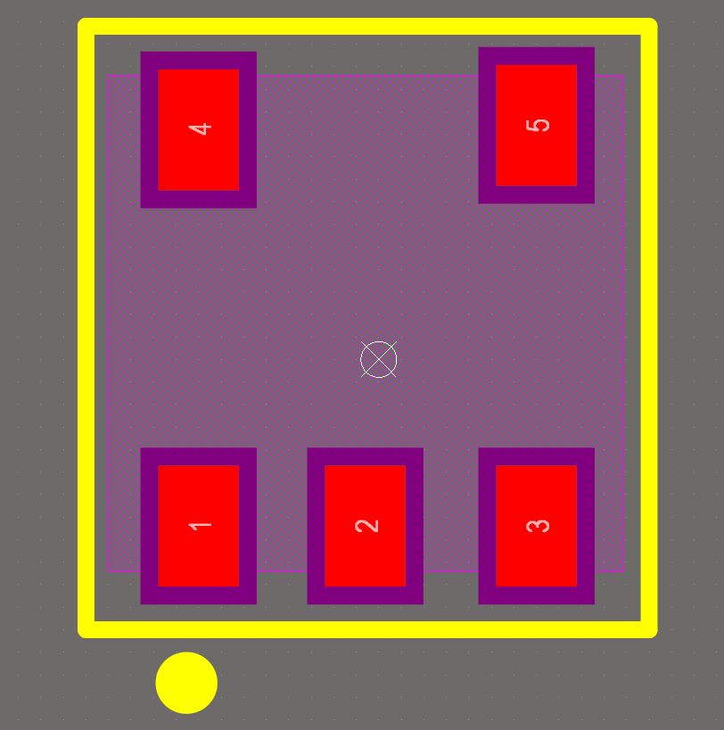
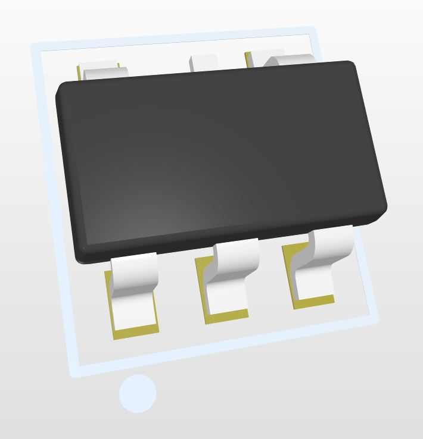
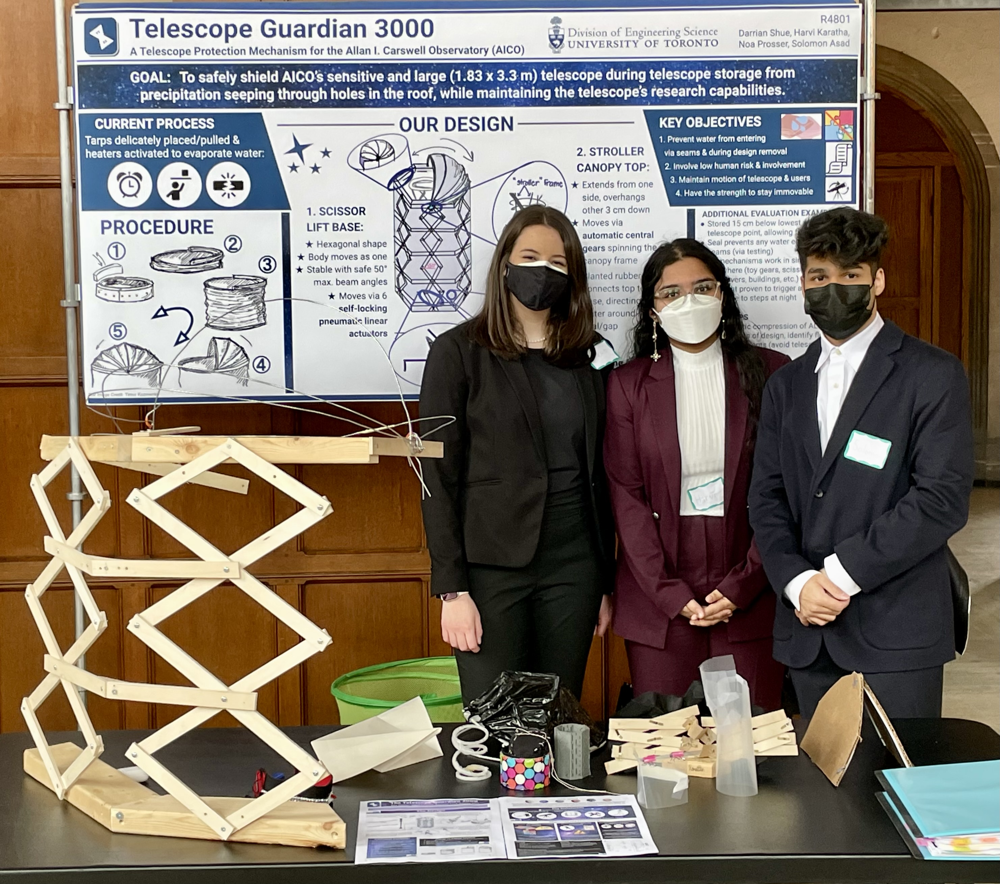
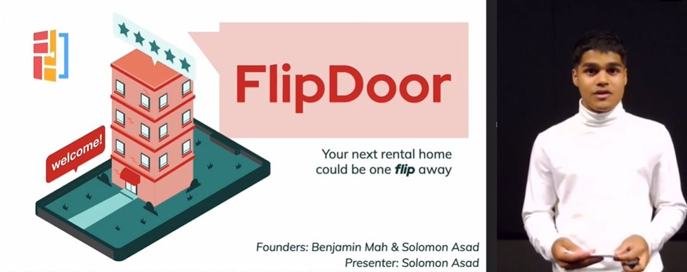
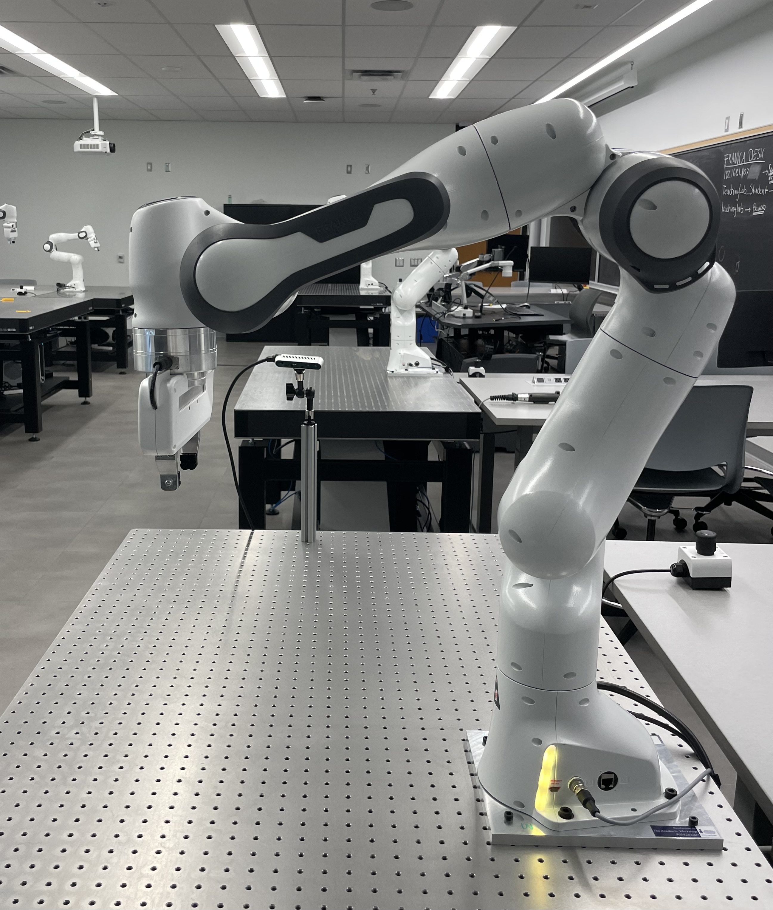
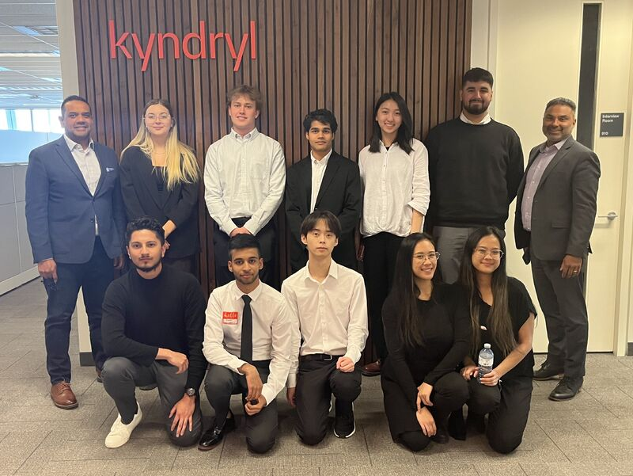

Welcome to solomonasad.com
The goal of this site is to demonstrate the bridge between my passions pf robotic engineering, product and consulting.
Get In TouchAbout Me
I'm an Engineering Science student at the University of Toronto (UofT) focussed on creating robotic solutions and providing value to stakeholders through consultative methods. Born and raised in Toronto, I enjoy travelling and experiencing different cultures and making meaninful connections with peers.
My Journey
Robotic Engineer at the University of Toronto Design League (UTDL)
Designed 3D models of PCB components and footprints for the circuit powering a Quadruped Robot using Altium Designer.
Image of a PCB Component
 Product Manager at UofT
Led an engineering design project with stakeholders from York University to address external damage to their $1M telescope.
Presenting our Prototype to Stakeholders
Bridging the Gap #1
These intertwined pursuits in robotic engineering and product have honed my problem-solving skills and the ability to apply technical expertise creatively. The combination of engineering proficiency and strategic thinking has enabled me to excel in both arenas, fostering adaptability and effective collaboration in diverse settings that I can leverage in the future.
Engineering & Technology Analyst at The Canada Post Corporation
Lead Software & Hardware Engineer for a Telepresence Robotics pilot project with the Double 3 robot from Double Robotics.
Double 3 Robot Pictured
.jpg)
Co-Founder at FlipDoor
Created the business plan, conducted market research, and pitched FlipDoor, a renter-focused startup shortening the rental proccess to potential investors.
Pitch to Investors
Bridging the Gap #2
The experience of leading a robotic project and presenting to company executives honed my leadership skills and ability to navigate the dynamic landscape of businesses, which is crucial to develop a startup. These two paths converged, equipping me with a blend of technical prowess and business acumen that empowers me to drive innovation with an entrepreneurial mindset.
Product Manager at UofT
Led an engineering design project with stakeholders from Ghanian Waste Facilities to address the waste crisis by generating a prototype demonstrating automated recycling capabilities.
Image of a Functional Prototype
.jpg)
Robotic Researcher at UofT's Robotics Institute
Researching neural radiance field (NeRF) in robotics.
Franka Research 3 by Franka Emika
Cloud Consultant Intern at Kyndryl
Driving cloud automation for financial institutions, pension plans and goverment organizations.
Intern Cohort at Kyndryl's Office
Bridging the Gap #3
The culmination of diverse product projects led me to work as a technical consultant in the cloud practice, leveraging both my engineering and business experience to drive value for stakeholders. Meanwhile, my background in robotics inspired me to delve into NeRFs research at a renowned robotics lab, fueling my passion for innovative applications in the field. This journey seamlessly integrates my leadership abilities and ambition for pushing the boundaries of technology.